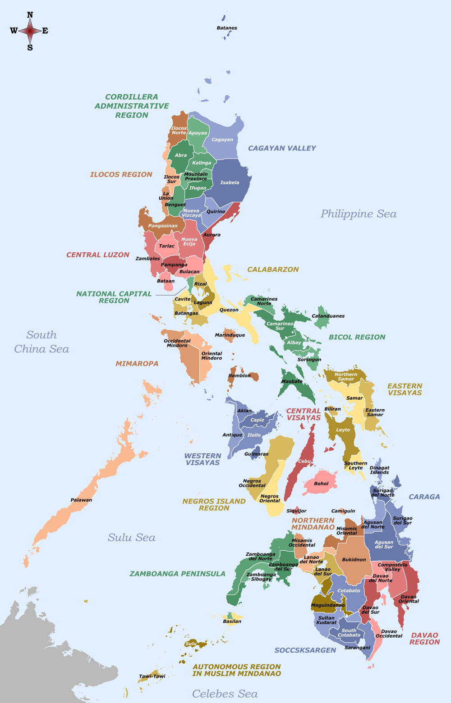

Welcome to my Page!
 This website was created by Melfred Juvida for his Project for Web Development 1 course. Melfred is a Business Technology Management student and a part time Supervisor at Tim Hortons. Melfred loves music and so he decied to create a website that is related to music.
This website was created by Melfred Juvida for his Project for Web Development 1 course. Melfred is a Business Technology Management student and a part time Supervisor at Tim Hortons. Melfred loves music and so he decied to create a website that is related to music.
Who is Melfred?
Melfred came from Philippines about 7 years ago. He was around 15 years old when he left everything in Philippines and started a new life in Winnipeg. His life wasn't easy back in the days. At a young age, he choose to work to a junkshop where he collect bottles, cans, cartons and other recycles in the streets to sell at the shop. The money that he earns from doing that is added to his weekly allowance for school. He doesn't have a lot of material things back then like computer, laptop, playstation or other gaming console. He just spend most of his time with his family, and mostly with his Grandma. But he didn't regret any of those things. In fact he was thankful that he grew up from those experience. Until his relatives decided to sponsor them, and they left what they have and start a new life in Winnipeg.
His life here in Canada at first was hard, of course. Trying to start with everything, new friends, new school, new life. He started working at Grade 11 at Tim Hortons as a team member. He gained a lot of experince from that job, from speaking fluently in English, being able to work in a fast paced environment, and acting as a leader and managing the store after he became a Supervisor. He supervise in two locations. One at Stonewall and the other one is at Brookside Blvd in the city. He continued working even while attending college. He works full time during weekends in the city location, 5am to 10am shifts at Stonewall every Monday and Fridays, and even 5am to 8am sometimes on Tuesdays in the city. He knows that it is hard but he also knows that there is no shortcut/ easy way in life.
His goal after he become successful in life, is to help some people who are homeless or in need of food or support in their life. He believes that being able to live in Canada is a blessing that was given to him and he wants to share those blessings to other people in the future.